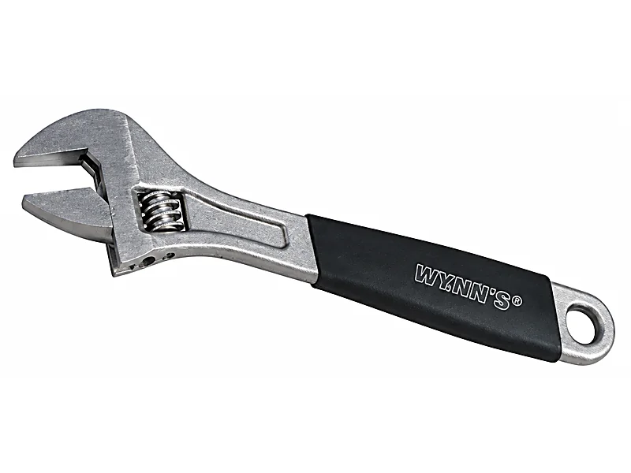
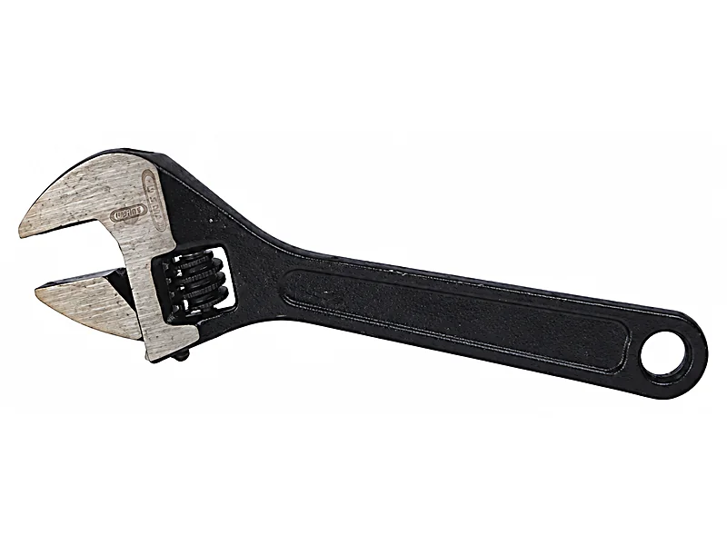
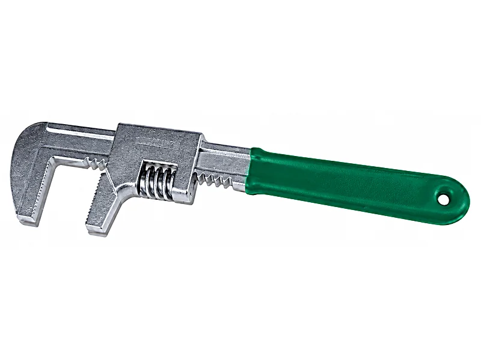

ประแจเลื่อนขนาดไหน เหมาะกับงานอะไร
ประแจเลื่อนมีตั้งแต่ 6 นิ้วไปจนถึง 24 นิ้ว และคนซื้อส่วนใหญ่ไม่แน่ใจว่าตัวเลขนั้นหมายถึงอะไร บทความนี้อธิบายว่าประแจเลื่อนขนาดไหนเหมาะกับงานอะไร เทียบนิ้วกับมิลลิเมตร และสรุปรุ่นที่มีในแคตตาล็อก WYNNTOOLS กับตรา M.T.T. พร้อมจำนวนต่อลังสำหรับร้านค้า
ขนาดเรียกตามความยาวด้าม
ประแจเลื่อนบอกขนาดเป็นความยาวทั้งอัน ไม่ใช่ความกว้างของปาก เช่น 8 นิ้ว คือยาวราว 200 มม. แคตตาล็อก WYNNTOOLS ระบุเป็นมิลลิเมตรอยู่ในรหัสสินค้า เช่น WNS200A คือ 200 มม. ส่วนประแจตรา M.T.T. ระบุเป็นนิ้ว
ยิ่งด้ามยาว ปากยิ่งอ้าได้กว้างและออกแรงงัดได้มากขึ้น แต่ตัวประแจก็หนักขึ้นและสอดเข้าที่แคบได้ยากขึ้น จึงควรเลือกจากขนาดน็อตและพื้นที่ทำงาน ไม่ใช่เลือกอันใหญ่ไว้ก่อน
| ขนาด | รุ่นในแคตตาล็อก | แพ็ก / ลัง |
|---|---|---|
| 6 นิ้ว · 150 มม. | WNS150F ด้ามหุ้ม · WNS150A รมดำ · WNS150B ชุบโครเมี่ยมขาว · WM9806 ตรา M.T.T. | 6/120 |
| 8 นิ้ว · 200 มม. | W2914 มินิด้ามหุ้ม · WNS200F ด้ามหุ้ม · WNS200A รมดำ · WNS200B ชุบโครเมี่ยมขาว · WM9808 ตรา M.T.T. · WNS200J ด้ามสั้น งานห้องน้ำ | 6/60 |
| 10 นิ้ว · 250 มม. | WNS250G ด้ามหุ้ม ปากสลับจับท่อ · WNS250F ด้ามหุ้ม · WNS250E รมดำเงา CR-V · WNS250A รมดำ · WNS250B ชุบโครเมี่ยมขาว · WM9810 ตรา M.T.T. | 6/60 |
| 12 นิ้ว · 300 มม. | WNS300G ด้ามหุ้ม ปากสลับจับท่อ · WNS300F ด้ามหุ้ม · WNS300E รมดำเงา CR-V · WNS300A รมดำ · WNS300B ชุบโครเมี่ยมขาว · WM9812 ตรา M.T.T. · WNS300J คอม้า ปากอ้ากว้าง | 6/36 |
| 15 นิ้ว · 375 มม. | WNS375F ด้ามหุ้ม · WNS375E รมดำเงา CR-V · WNS375A รมดำ · WNS375B ชุบโครเมี่ยมขาว · WM9815 ตรา M.T.T. | 12 |
| 18 นิ้ว · 450 มม. | WNS450A รมดำ · WNS450B ชุบโครเมี่ยมขาว · WM9818 ตรา M.T.T. | 12 |
| 24 นิ้ว · 600 มม. | WNS600B ชุบโครเมี่ยมขาว · WM9824 ตรา M.T.T. | 1/6 |
ดูรหัสทั้งหมดพร้อมรูปได้ที่ประแจเลื่อน WYNNTOOLS และประแจเลื่อนรมดำตรา M.T.T.
เลือกขนาดตามงาน
| งาน | ขนาดที่เหมาะ | เหตุผล |
|---|---|---|
| น็อตเล็ก อุปกรณ์ไฟฟ้า จักรยาน | 6 นิ้ว (150 มม.) | เล็ก เบา สอดเข้าที่แคบได้ และพกในกระเป๋าเครื่องมือสะดวก |
| ประแจอันแรกสำหรับบ้าน | 8 นิ้ว (200 มม.) | ขนาดกลาง ใช้ได้หลากหลาย และยังพกสะดวก |
| ก๊อกน้ำและอุปกรณ์ในห้องน้ำ | WNS200J ด้ามสั้น 200 มม. | แคตตาล็อกระบุว่าปากอ้า 16–68 มม. และไม่ทำให้ผิวชิ้นงานเป็นรอย |
| งานประปา ข้อต่อท่อ | 10–12 นิ้ว (250–300 มม.) หรือรุ่นปากสลับ WNS250G / WNS300G | ด้ามยาวขึ้นออกแรงได้มากกว่า และรุ่นปากสลับถอดปากล่างกลับด้านเพื่อจับท่อได้ |
| ต้องการปากอ้ากว้างแต่ไม่อยากได้ด้ามยาว | WNS300J คอม้า 300 มม. | แคตตาล็อกจัดเป็นรุ่นปากอ้ากว้าง (Large Opening) สำหรับงานที่ประแจเลื่อนทั่วไปอ้าไม่พอ |
| น็อตใหญ่ งานเครื่องจักร งานโครงสร้าง | 15–18 นิ้ว (375–450 มม.) | ปากอ้ากว้างขึ้นและด้ามยาวพอสำหรับแรงงัดสูง |
| น็อตขนาดใหญ่มาก งานอุตสาหกรรม | 24 นิ้ว (600 มม.) WNS600B หรือ WM9824 | ใหญ่ที่สุดในแคตตาล็อก ใช้เมื่อขนาดเล็กกว่าอ้าไม่พอ |
แต่ละรุ่นต่างกันตรงไหน
รมดำ (รหัสลงท้าย A)
เหล็ก SK-55 ผิวรมดำ มีตั้งแต่ 150 ถึง 450 มม. เป็นรุ่นพื้นฐานที่มีครบเกือบทุกขนาด
ชุบโครเมี่ยมขาว (รหัสลงท้าย B)
เหล็ก SK-55 ผิวชุบโครเมี่ยม มีตั้งแต่ 150 ถึง 600 มม. เป็นรุ่นเดียวใน WYNNTOOLS ที่มีขนาด 600 มม.
รมดำเงา CR-V (รหัสลงท้าย E)
เหล็กโครมวานาเดียม (CR-V) มีขนาด 250, 300 และ 375 มม.
ด้ามหุ้ม (รหัสลงท้าย F) และมินิด้ามหุ้ม W2914
ด้ามหุ้มจับถนัดมือ วัสดุ C-ALLOY มีตั้งแต่ 150 ถึง 375 มม. ส่วน W2914 เป็นรุ่นมินิ 200 มม.
ด้ามหุ้ม ปากสลับจับท่อ (รหัสลงท้าย G)
ปากล่างถอดออกมาสลับด้านได้ เพื่อใช้จับท่อ มีขนาด 250 และ 300 มม.
ตรา M.T.T. แบรนด์ของร้าน
เหล็ก SK-55 รมดำ ปากประแจเจียให้เนียน สเกลขัดเงา มีตั้งแต่ 6 ถึง 24 นิ้ว




สำหรับร้านค้าที่ซื้อไปขายต่อ
คอลัมน์ "แพ็ก / ลัง" ในตารางด้านบนมาจากแคตตาล็อก เช่น 6/60 หมายถึงแพ็กละ 6 อัน ลังละ 60 อัน ขนาดใหญ่ 375 และ 450 มม. บรรจุลังละ 12 อัน ส่วนประแจตรา M.T.T. แคตตาล็อกยังไม่ได้ระบุจำนวนต่อลัง ถามทางร้านได้
ร้านที่ขายเครื่องมือทั่วไปมักลงประแจเลื่อนมากกว่าหนึ่งขนาด ถ้ายังไม่แน่ใจว่าจะเริ่มจากหมวดไหน อ่านเปิดร้านฮาร์ดแวร์ต้องมีอะไรบ้าง
คำถามที่ถามกันบ่อย
ประแจเลื่อน 8 นิ้ว ยาวกี่เซน
ยาวราว 20 ซม. หรือ 200 มม. ขนาดของประแจเลื่อนนับจากความยาวทั้งอัน
ประแจเลื่อน 12 นิ้ว กี่มิล
ราว 300 มม. ในแคตตาล็อก WYNNTOOLS คือรหัสที่มีเลข 300 เช่น WNS300A
ประแจเลื่อนอ้าได้กว้างสุดกี่มิล
แต่ละรุ่นต่างกัน แคตตาล็อกระบุไว้เฉพาะรุ่นด้ามสั้น WNS200J ที่อ้าได้ 16–68 มม. รุ่นอื่นส่งรหัสมาถามทาง LINE ได้ ไม่ควรเดาจากความยาวด้ามอย่างเดียว
ประแจเลื่อนจับท่อได้ไหม
ประแจเลื่อนทั่วไปจับท่อกลมไม่อยู่ ให้ใช้รุ่นปากสลับ WNS250G หรือ WNS300G ที่ถอดปากล่างกลับด้านเพื่อจับท่อ หรือใช้ประแจจับท่อ
ซื้อยกลังได้ไหม ราคาเท่าไหร่
ได้ จำนวนต่อแพ็กและต่อลังอยู่ในตารางด้านบน ราคาไม่ได้ประกาศในเว็บ ส่งรหัสมาทาง LINE ทางร้านแจ้งราคาปลีกและราคาส่งให้
อ่านต่อ
ไม่แน่ใจว่าใช้ขนาดไหน? ถามทาง LINE
บอกงานหรือขนาดน็อต ทีมงานสำเพ็งแนะนำขนาดและรุ่นให้